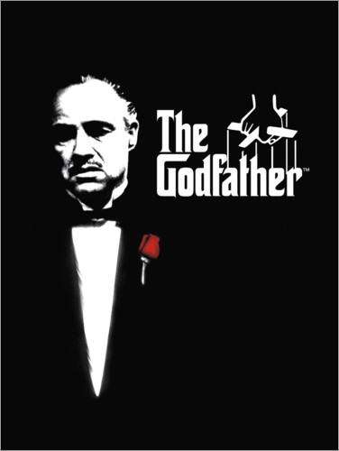

- Director: Francis Ford Coppola
- Reparto: Marlon Brando, Al Pacino, James Caan, Robert Duvall, Diane Keaton, John Cazale, Talia Shire, Richard S. Castellano, Sterling Hayden, Gianni Russo, Rudy Bond, John Marley, Richard Conte
- Duracion: 175 min.
- Nacionalidad: Estados Unidos
- Año: 1972
- Límite edad: +18
El padrino


| Sala | Horario |
|---|---|
| 7 | 18 |
| 7 | 21.30 |
América, años 40. Don Vito Corleone (Marlon Brando) es el respetado y temido jefe de una de las cinco familias de la mafia de Nueva York. Tiene cuatro hijos: Connie (Talia Shire), el impulsivo Sonny (James Caan), el pusilánime Fredo (John Cazale) y Michael (Al Pacino), que no quiere saber nada de los negocios de su padre. Cuando Corleone, en contra de los consejos de 'Il consigliere' Tom Hagen (Robert Duvall), se niega a participar en el negocio de las drogas, el jefe de otra banda ordena su asesinato. Empieza entonces una violenta y cruenta guerra entre las familias mafiosas.
Forrest Gump

- Director: Robert Zemeckis
- Reparto: Tom Hanks, Robin Wright, Gary Sinise, Mykelti Williamson, Sally Field, Rebecca Williams, Michael Conner Humphreys, Haley Joel Osment, George Kelly, Bob Penny, John Randall, Sam Anderson, Margo Moorer, Ione M. Telech, Christine Seabrook, Charles Boswell
- Duracion: 142 min.
- Nacionalidad: Estados Unidos
- Año: 1994
- Límite edad: +13
| Sala | Horario |
|---|---|
| 8 | 18 |
| 8 | 21.30 |
Forrest Gump (Tom Hanks) sufre desde pequeño un cierto retraso mental. A pesar de todo, gracias a su tenacidad y a su buen corazón será protagonista de acontecimientos cruciales de su país durante varias décadas. Mientras pasan por su vida multitud de cosas en su mente siempre está presente la bella Jenny (Robin Wright), su gran amor desde la infancia, que junto a su madre será la persona más importante en su vida.
Pulp Fiction

- Director: Quentin Tarantino
- Reparto: John Travolta, Samuel L. Jackson, Uma Thurman, Bruce Willis, Ving Rhames, Harvey Keitel, Tim Roth, Amanda Plummer, María de Medeiros, Eric Stoltz, Rosanna Arquette, Christopher Walken, Paul Calderon
- Duracion: 153 min.
- Nacionalidad: Estados Unidos
- Año: 1994
- Límite edad: +18
| Sala | Horario |
|---|---|
| 9 | 18 |
| 9 | 21.30 |
Jules y Vincent, dos asesinos a sueldo con no demasiadas luces, trabajan para el gángster Marsellus Wallace. Vincent le confiesa a Jules que Marsellus le ha pedido que cuide de Mia, su atractiva mujer. Jules le recomienda prudencia porque es muy peligroso sobrepasarse con la novia del jefe. Cuando llega la hora de trabajar, ambos deben ponerse "manos a la obra". Su misión: recuperar un misterioso maletín.